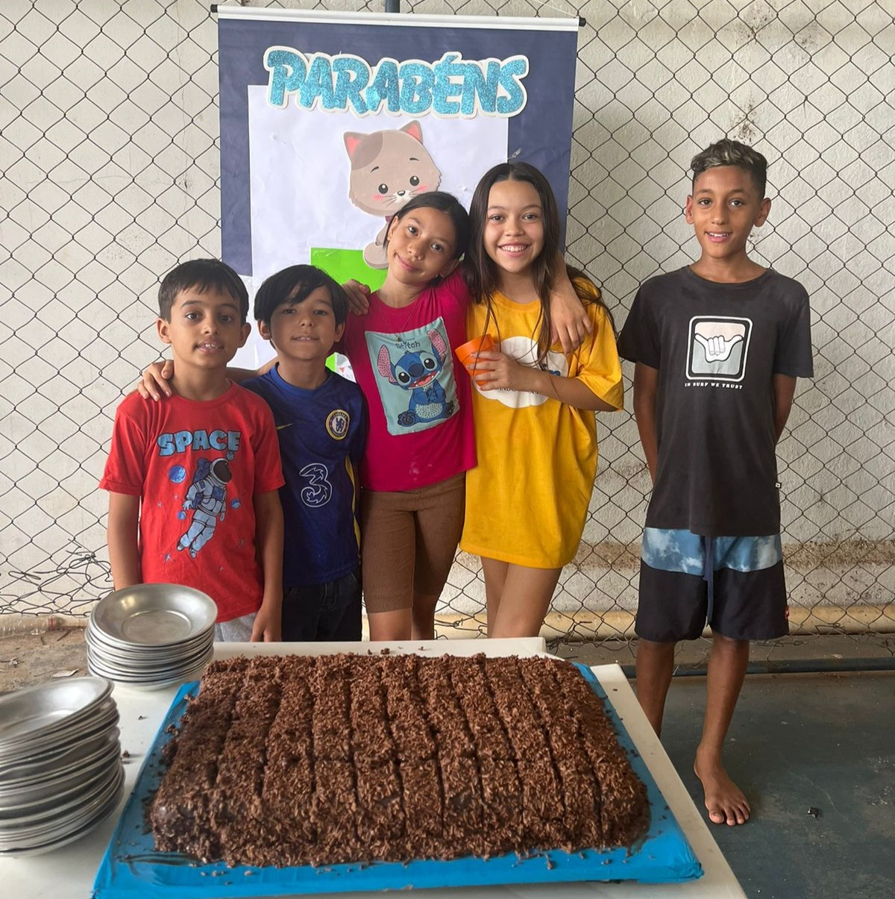
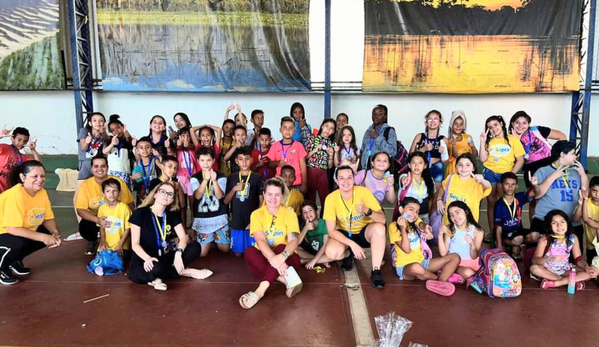
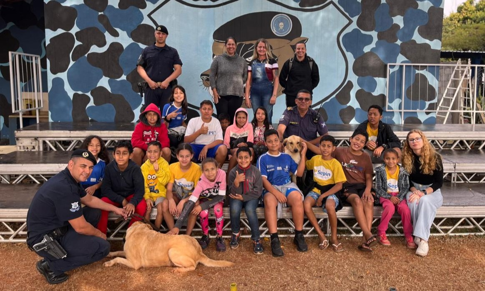
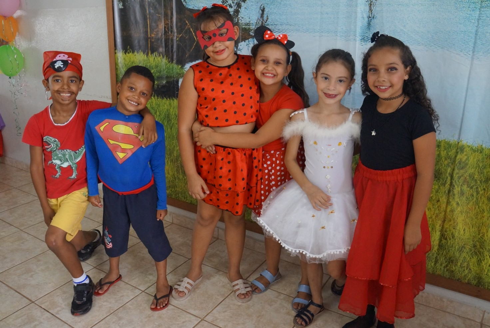
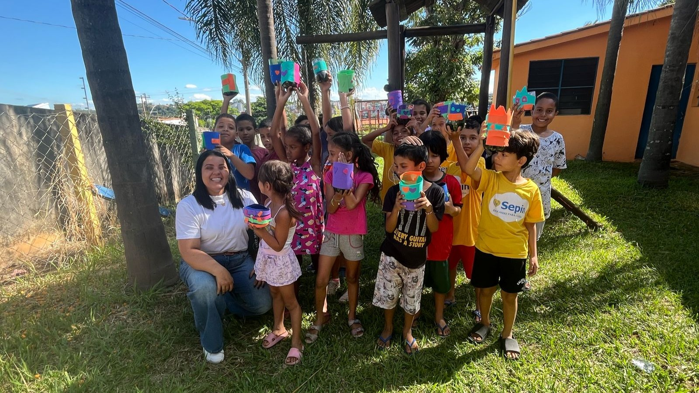
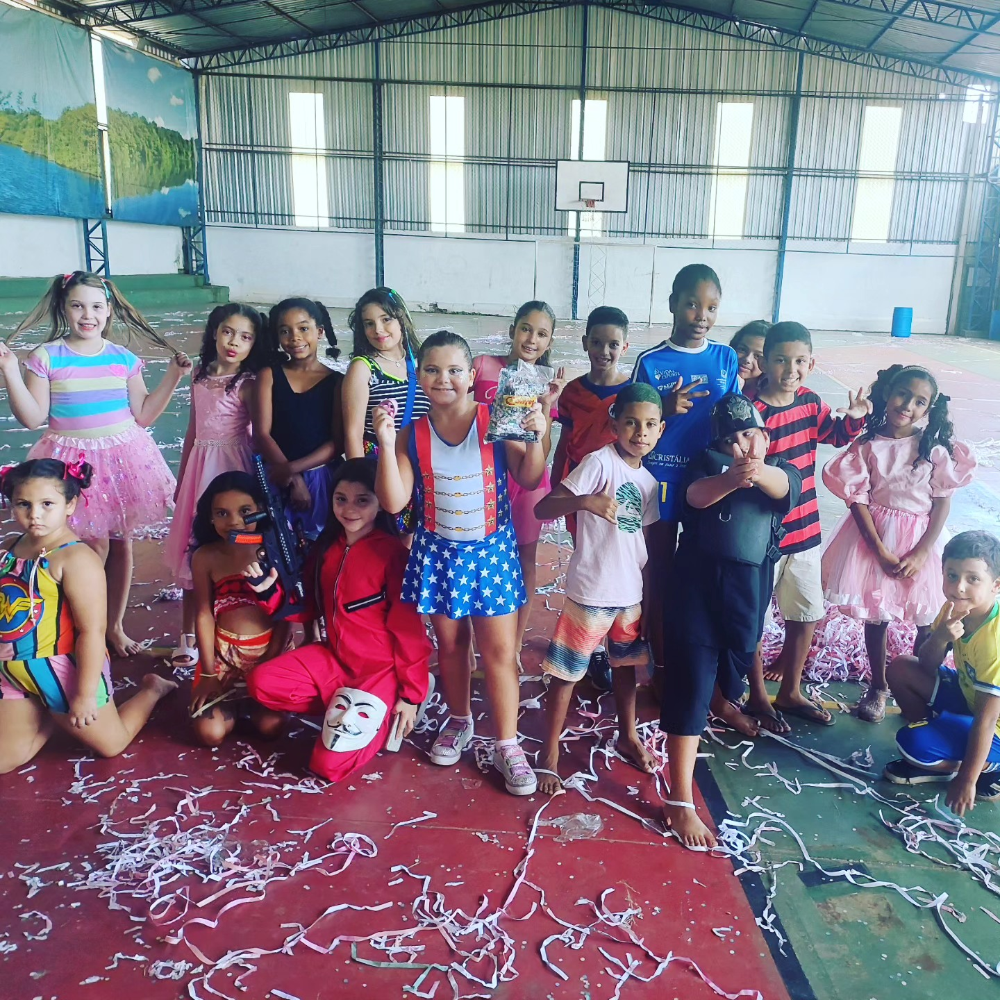
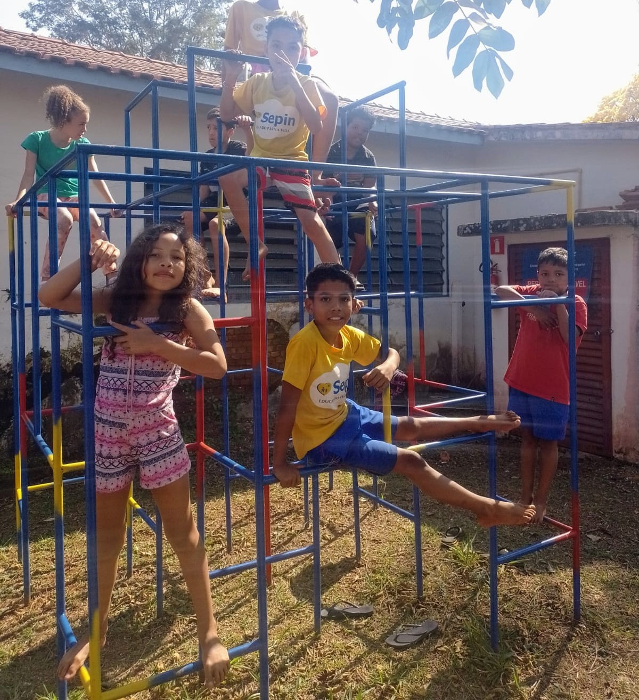

Educação


Organização sem fins lucrativos que atua em Itapira desde 1965, desenvolvendo o Serviço de Convivência e Fortalecimento de Vínculos para crianças e adolescentes de 4 a 14 anos, com foco em desenvolvimento integral e proteção social.
A missão da entidade Serviço de Proteção à Infância e à Adolescência de Itapira envolve garantir os direitos das crianças e adolescentes, promovendo sua proteção e desenvolvimento integral.
A visão do Serviço de Proteção à Infância e à Adolescência de Itapira é a de um futuro em que todas as crianças e adolescentes possam viver com dignidade, ter seus direitos respeitados e acessar oportunidades para um desenvolvimento pleno e saudável.
Programas que fortalecem vínculos, incentivam a educação e desenvolvem habilidades sociais.






disciplina, respeito e superação
expressão cultural e desenvolvimento pessoal
Atuação integrada com o CRAS e rede de proteção, oferecendo orientação e fortalecimento dos vínculos familiares.

Acompanhe nossas ações, eventos e projetos recentes.


Entre em contato com o SEPIN para saber mais, tirar dúvidas ou descobrir como apoiar nossas iniciativas e contribuir com o futuro de crianças e adolescentes.